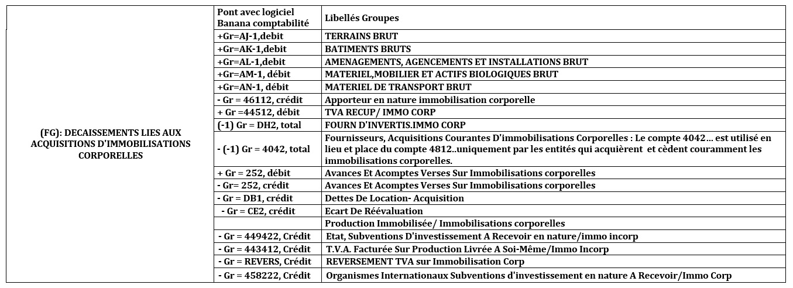

Activité 8: Comprendre les Différentes Lignes des Tableaux de Flux de Trésorerie
Contenu:
- A. Fiche Pédagogique
- B. Fiche Technique
- 1. Trésorerie nette au 01/01/N
- 2. Capacité d’Autofinancement Globale (CAFG)
- 3. Variation actif circulant HAO
- 4. Variation des stocks
- 5. Variation des créances
- 6. Variation des passifs circulants
- 7. Décaissements liés aux acquisitions d’immobilisations incorporelles
- 8. Décaissements liés aux acquisitions d’immobilisations corporelles
- 9. Décaissements liés aux acquisitions d’immobilisations financières
- 10. Encaissements liés aux cessions d’immobilisations incorporelles et corporelles
- 11. Encaissements liés aux cessions d’immobilisations financières
- 12. Augmentation du capital par apports nouveaux
- 13. Subventions d’investissements reçues
- 14. Prélèvements sur le capital
- 15. Dividendes versés
- 16. Emprunts
A. Fiche Pédagogique
1. Objectifs spécifiques :
Au terme de cette activité, le participant sera capable d’éditer ou d’imprimer le grand livre, la balance et les états financiers.
2. Supports :
-
OHADA, Acte uniforme relatif au droit comptable et à l’information financière et système comptable OHADA, Yaoundé le 15 février 2017 ;
-
Guide d’application OHADA ;
-
EPSP, DIPROMAD, Curriculum des Humanités Techniques Commerciales, Commerciale et Gestion, Kinshasa 2014 ;
-
SERNAFOR Technique, module de formation sur le système comptable OHADA niveau 4, 2018 ;
3. Méthodes et techniques :
Exposé, discussion dirigée, brainstorming et travail de groupe.
4. Durée :
120 minutes
5. Déroulement de l’activité :
| N° | Tâches | Méthodes et techniques | Durée |
|---|---|---|---|
| 1. | Présentation de l’activité et ses objectifs | Exposé | 5 minutes |
| 2 | Ressortir les formules des différentes lignes du tableau des flux de flux de trésorerie | Brainstorming | 20 minutes |
| 3. | Constitution des sous-groupes pour résoudre les certaines opérations spécifiques et leurs impacts sur les différentes lignes du tableau des flux des trésorerie. | Travail en groupe | 45 minutes |
| 4. | En plénière : le rapporteur de chaque sous – groupe présente la production de son équipe suivie de mise en commun avec les membres des autres sous-groupes et du facilitateur. | Discussion dirigée | 50 minutes |
| 6. | Questions de synthèse :
|
Brainstorming Discussion dirigée |
10 minutes |
B. Fiche Technique
Tableau 1: Trésorerie nette au 01/01/N
| Paramètre | Pont avec logiciel banana comptabilité | Libellés groupes |
|---|---|---|
| ZA : Trésorerie nette au 01/01/N = (Trésorerie actif N-1) – (trésorerie passif N-1) | (Gr=BT, opening) – (-1)Gr=DT, opening) | Trésorerie nette au début de l’exercice |
Suite Tableau 1
Tableau 2: Capacité d’Autofinancement Globale (CAFG)
| Paramètres | Pont avec logiciel banana comptabilité | Libellés groupes |
|---|---|---|
| ‘+ {-1Gr=134, total} | EBE | |
| + {6541, total} | VC DE CESSION COURANTES IMMO INCORP | |
| + 6542, total | VC DE CESSION COURANTES IMMO CORP | |
| ( FA) = | -(-1) {7541, total} | PROD DE CESSION COURANTES IMMO INCORP |
| Capacité | -(-1) {7542,total} | PROD DE CESSION COURANTES IMMO CORP |
| d’Autofinancement | +(-1){ Gr=136,total} | RESULTAT FINANCIER |
| Globale (CAFG) | +(-1){Gr=TO, total } | PRODUITS HAO, REPRISES HAO, SUBV D’EQUIP |
| -{ Gr=RP, total} | CHARGES ET DOTATIONS H.A.O. | |
| -{Gr=RQ, total } | PARTICIPATION DES TRAVAILLEURS | |
| -{Gr=RS, total } | IMPOTS SUR LE RESULTAT |
Tableau 3: Variation actif circulant HAO
| (FB) = Variation actif circulant HAO | (Gr =BA-1, total) - (Gr=485, total)- (Gr=4856, total) | AUTRES CREANCES HAO | VARIATION (N) - (N-1) | les écritures courantes de l’exercices comptables |
|---|
Tableau 4: Variation des stocks
| (FC) = Variation des stocks | Gr=BB, total | STOCKS ET ENCOURS NETS | VARIATION (N) - (N-1) | les écritures courantes de l’exercices comptables |
|---|
Tableau 5: Variation des créances

Tableau 6: Variation des passifs circulants

Tableau 7: Décaissements liés aux acquisitions d’immobilisations incorporelles
Tableau 8: Décaissements liés aux acquisitions d’immobilisations corporelles

Tableau 9: Décaissements liés aux acquisitions d’immobilisations financières
Tableau 10: Encaissements liés aux cessions d’immobilisations incorporelles et corporelles
Tableau 11: Encaissements liés aux cessions d’immobilisations financières
Tableau 12: Augmentation du capital par apports nouveaux
Tableau 13: Subventions d’investissements reçues